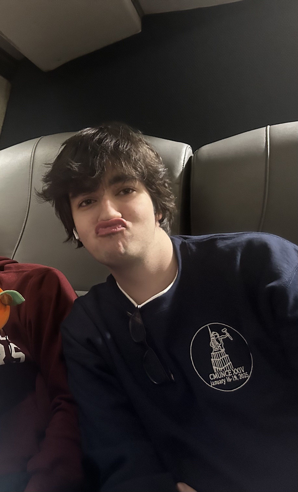

BUILDING
Games I made for fun
Aura Bot and Bababooey Arena were passion projects for exploring coding and learning from community feedback. Both ran during summer 2026 and are no longer active.
See the projectsCOMPUTER SCIENCE · UMASS AMHERST
I’m a computer science student who enjoys turning my interests into software, from building Discord bots to exploring AI and automating research experiments.
See what I’m building
A QUICK LOOK
BUILDING
Aura Bot and Bababooey Arena were passion projects for exploring coding and learning from community feedback. Both ran during summer 2026 and are no longer active.
See the projectsEXPLORING
From Python automation for RFID experiments to supporting a generative AI tool for learning Python.
See what I worked on